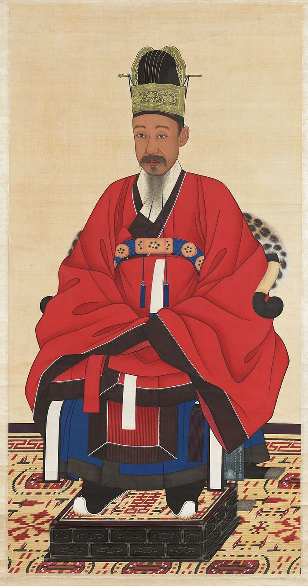
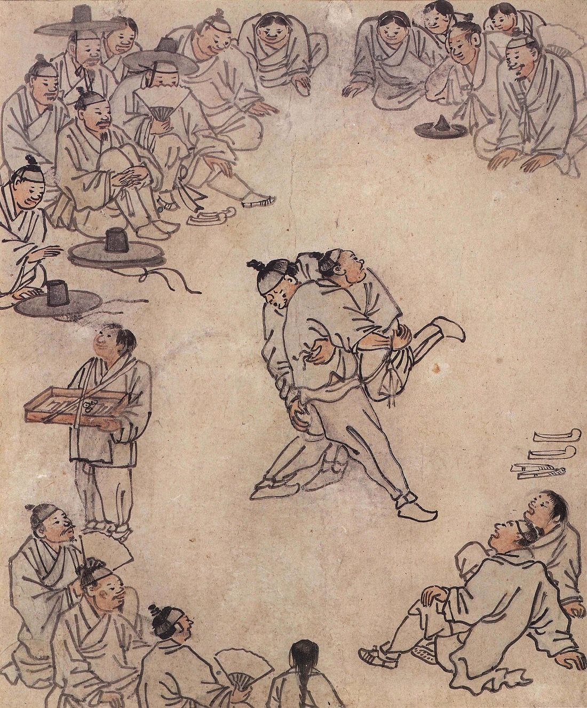
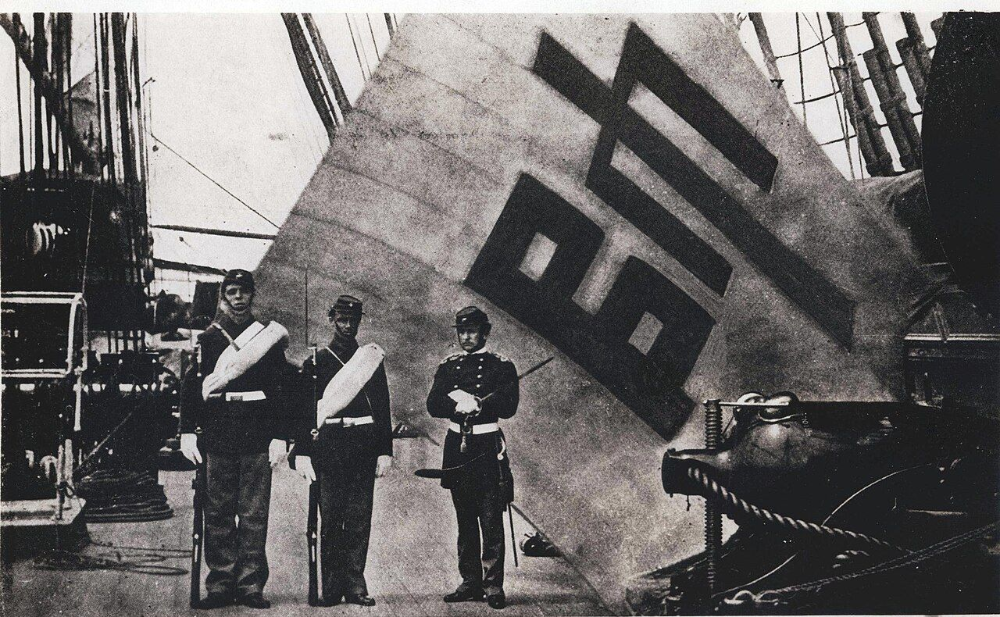
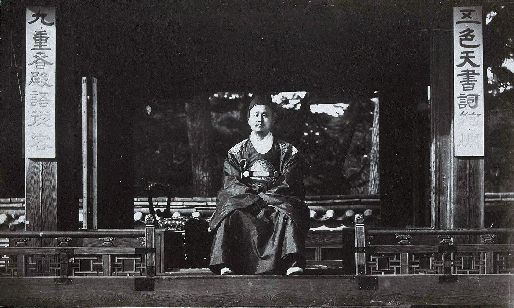
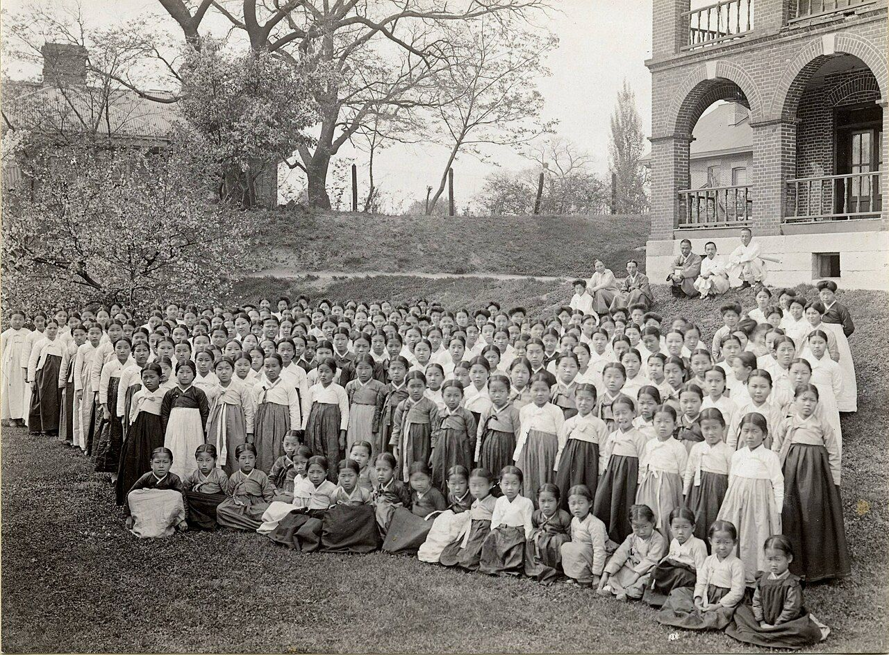
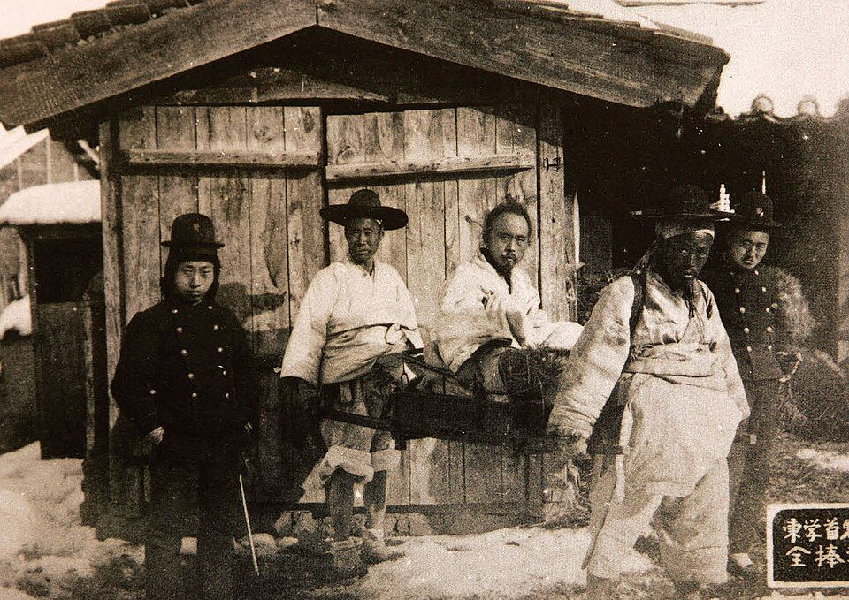
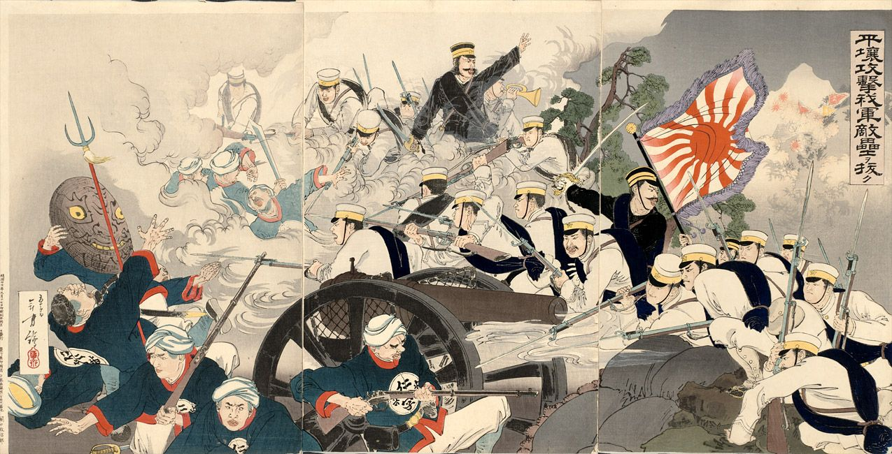

Unit 9 · Study guide · Korea
Korea in the Nineteenth Century 격동의 19세기
Child kings, a new religion, and a kingdom caught between China and Japan, 1800–1895
ContentsOverview
The unit in one paragraph
pp. 363, 378–379
After 1800 every Korean king came to the throne as a boy, so dowager regents and the clans of royal wives ran the government. Population fell, farmers went hungry, and corrupt tax collection set off rebellions in 1811 and 1862. Men from the secondary status groups pushed new ideas, and a fallen yangban, Choe Jeu, founded Korea's first new religion, Donghak. From 1864 the king's father, the Daewongun, reformed at home and refused all treaties. After his son's wife, Queen Min, pushed him aside, Korea signed treaties, and China and Japan fought for control: a soldiers' mutiny (1882), a failed coup (1884), and a decade of Chinese oversight. In 1894 the Donghak Rebellion gave Japan its excuse for war with China. Japan won, installed a reform cabinet, and its agents murdered the queen in 1895. By then Korea had left the tributary system, but its reforms came too late to keep it independent.
- Why did the rebellions happen, and why did the state respond so little to them and to foreign aggression?
- What changed in the lives of people outside the government?
- What was Korea's role in the Sino-Japanese War, and what does the war show about Korea's relations with its neighbors?
Timeline at a glance
Child kings and in-law rule, 1800–1864
pp. 363–364
King Jeongjo died in 1800 and left an 11-year-old heir. From then to the end of the century, all four kings came to the throne as children under dowager regents, or were picked by a dowager when there was no crown prince. Male relatives of the regents and queens got high office, so politics turned on which clan was tied to the eldest dowager and which supplied the king's wife: in-law government. p. 363
When King Cheoljong died without an heir in 1863, Queen Sinjeong of the Pungyang Jo clan, the eldest living queen, chose a 12-year-old distant relative, King Gojong. His father became the Daewongun. The dowager's regency ended in 1866, but Gojong was kept unaware of his right to rule, and his father ran the government until 1874 without any formal post. pp. 363–364

How in-law rule worked p. 363
The textbook's summary: by 1800 the dynasty had made so many compromises with yangban factions that its kings had little room to face social change or foreign pressure. Quarrels among the king's relatives, especially his father and his wife, later gave China and Japan their openings. pp. 378–379
Status, slaves, and Catholics
p. 364
A shrinking population
New diseases such as cholera, deforestation that caused floods, and drought ended the 18th-century population rise. Korea's population fell to 12.4 million by 1816 and stayed between 12.2 and 12.7 million until 1876, while China's and Japan's grew. p. 364
Groups in between p. 364
As the yangban dug into the central government, the groups just below them also became hereditary. Historians call them secondary status groups, though they disagree about whether the last two below belong in the category. Members of these groups appear more and more in 19th-century art, literature, and reform. Tap a group.
Elite
Secondary status groups
Below
Freeing the official slaves p. 364
In 1801 the dowager regent freed most of the 67,000 official slaves, except those working in local offices. The decree recognized what had already happened: many had bought their freedom or earned it by military service, and the rest no longer worked for the state. Some slaves owned slaves; some owned land. Hereditary slavery for several million private slaves continued to 1886, and slavery was abolished in 1894, though the mostly yangban masters kept their power until near the dynasty's end. See Part 12.
Persecuting Catholics p. 364
- 1801. The same regent, backed by the Patriarch faction and the Party of Principle, set up five-family mutual surveillance to find Christians in the Southerner faction. The reformer Jeong Dasan was exiled; in exile he wrote treatises on local government and the penal system.
- The Hwang Sayeong letter. Officials caught a Christian's letter asking the pope for a French military expedition to protect Korean converts. Treating it as treason, the regent executed more than 300 Christians that year. The Southerners and the Party of Expediency were kept out of office for another half-century.
- 1839 and after. Three French missionaries and scores of converts were executed in 1839. Kim Daegeon, Korea's first priest, trained in Macao, was executed six years later (in 1846†).
- Who converted. Between persecutions the number of converts grew, now mostly from the intermediate status groups and commoners, with a remarkable number of women.
Social ferment and popular culture
pp. 364–367
Many things now seen as traditional Korean culture took their present form in this century. Men from the secondary status groups, more than yangban, spread new ideas to make sense of society and push for reform. p. 364
Scholars
- Practical learning: Seo Yugu's Sixteen Treatises Written in Retirement on farming and the economy; Kim Jeonghui, poet and calligrapher, compared 6th-century stone inscriptions.
- Choe Hangi's Personnel Administration (1860): pick officials for talent, whatever their status, and be open to foreigners.
- Seong Haeeung: collect taxes in cash and pay workers instead of using forced labor.
- Bingheogak Yi wrote an encyclopedia of women's work, some of it commercial, so women would be respected for their achievements.
Writers and performers
- Poems by men of the secondary groups, collected in 1857 as Third Selection of Poems of the People.
- Historical novels celebrating Korea's martial past.
- Sin Jaehyo's lyrics for pansori.
- Masked drama mocking the yangban; anonymous painters decorating temple walls.

Painting everyday life pp. 365–366
Kim Hongdo was the first painter to show daily life in Korea. In Wrestling, men and women watch an informal match while a peddler waits for a sale. Korean wrestling went back to the Goguryeo era and looked like Japanese sumo; men also practiced martial arts, some from Chinese traditions. pp. 365–366
Look for: the circle of spectators, the hats that mark rank, and the young seller at the edge.
Material culture: gimchi p. 367
The dish most tied to Korean cooking reached its present form only in the 19th century. Step through how it got there.
Koreans pickle vegetables, especially long radishes, in salt to last the winter.
Spices and seasonings such as soy sauce are added; people eat it all year.
Hot peppers from the Americas arrive via Japan after Hideyoshi's invasion.
Only two centuries on are the peppers used to flavor gimchi.
Chinese cabbage (baechu) arrives and becomes the favorite vegetable.
Hard times and rebellion
pp. 366, 369
Historians disagree about how much the economy grew before foreigners arrived. The 18th-century signs of growth, more markets and more commerce, did not lead to more output. p. 366
How farmers survived p. 366
The most common strategy was the gye, a credit club like those that arose in Japan: members pooled funds, then took turns using the money. Even yangban and wealthy households joined. Gye still give Korean women, and immigrants abroad who lack bank access, a source of credit.
Farmers also planted New World crops as insurance against famine: the sweet potato came via Japan in 1763, the white potato via China around 1840. Even so, tenants and small farmers lived on the edge. After a bad harvest or two they left their fields; thousands starved. Some cleared hillsides by slash-and-burn, which stripped the uplands and made floods worse. Some joined brigand bands. Others moved to Manchuria and Russia's Maritime Province.
Rebellions: the chief sign of unrest p. 369
| Hong Gyeongrae, 1811 | Southern risings, 1862 | Donghak, 1894 | |
|---|---|---|---|
| Where | Pyeongan province, northwest | Mostly the three southern provinces | Spread nationwide; strongest in North Jeolla† |
| Leaders | Hong, a fallen yangban and geomancer; men of secondary status | Commoners, in dozens of separate risings; yangban dropped out once violence began | Donghak leaders; military chief Jeon Bongjun |
| Grievances | Unfair taxes and service; discrimination against northerners | Corruption in the land tax, military cloth tax, and grain loans | Corrupt officials, the Min faction, foreigners, Christianity, persecution |
| Outcome | Quickly suppressed; small outbreaks continued | Officials sent to punish corrupt magistrates and calm the people | Truce, then a second rising crushed by Japanese and Korean troops |
The 1862 risings were larger and more widespread than earlier unrest but had no central organization. Taxes had been merged into a single land tax, but corrupt clerks and magistrates more than cancelled the savings. Rebels with bamboo spears killed government functionaries and burned official buildings; their target was officials more than yangban landlords. p. 369
Choe Jeu and the Donghak religion
pp. 368–369
Choe Jeu was a déclassé yangban: because his mother had remarried, he could not take the civil service examination. Unhappy with his life and appalled at Korea's condition, he had a vision in 1860 in which Hanulnim, the Lord of Heaven, gave him the task of spreading a new faith and saving humankind. He made a healing potion by burning amulets and mixing the ash with water, and called the faith Donghak, "Eastern Learning." p. 369
His followers were mostly commoners and slaves. Yangban rejected his break with Confucian orthodoxy and his teaching that all men were equal in their duty to serve the Lord of Heaven, with whom they were united by nature. That made Donghak a threat both to the dynasty and to Confucian purity. Choe had nothing to do with the 1862 risings, but he was arrested in 1863 for heterodox teaching and beheaded in 1864. The movement went underground and, apart from a minor rising in 1879, did not reappear until 1893. p. 369
Donghak beliefs: Choe Jeu's conversion story
In his account (paraphrased here), Choe explains how he came to believe:
- The seasons follow each other without fail; that order shows the Lord of Heaven at work, but ignorant people think rain and dew just happen.
- People now do as they please and ignore Heaven's decrees. In 1860 he learned that Westerners, claiming to act for the Lord of Heaven, were seizing land worldwide by force and building churches everywhere.
- That spring he suddenly shivered as if ill and heard a voice that called itself the Lord Above.
- Asked whether Choe should teach the Western way, the voice said no. It gave him a talisman, "medicine of the mountain immortals," shaped like the Great Ultimate, to heal disease, and an incantation to teach people.
- Terrible epidemics and Western aggression made the moment urgent, yet people ignored or mocked him.
Source cited by the textbook: Robert E. Buswell Jr., ed., Religions of Korea in Practice (Princeton University Press).
Questions for analysis (p. 368): What circumstances led Choe Jeu to his beliefs? What answers does he see for himself and for Korea? Where do those answers come from?
Even in 1864, Donghak showed that popular discontent was calling into question whether Confucian orthodoxy could solve Korea's problems. Compare Deguchi Nao's new religion in Meiji Japan (Unit 8, p. 352).
The Daewongun: reform at home, isolation abroad
pp. 369–373
The year 1864 divides Korea's 19th century. Korean envoys in Beijing had heard of China's defeat in the Opium War but not how bad it was, and Wei Yuan's Illustrated Essay of the Maritime Nations, which reached Korea in 1845, was ignored. Only after China leased Russia land near Korea in 1860 did the threat register, and official action waited for Gojong's accession with his father behind him. The Daewongun tried to revive royal power through reform at home and isolation abroad. p. 369
His reforms, and why yangban hated them pp. 369–370
Left in ruins since Hideyoshi's invasion of 1592, to restore the king's prestige.
Registered land hidden from tax collectors, though it did not cover the whole country.
For the first time, though paid in their slaves' names to spare embarrassment.
Cancelled past-due loans and moved the program from corrupt magistrates to local elders; farmers escaped permanent debt.
All but 47, since they had become bases of yangban factions.
Korea's first multiple-denomination coin, to pay for his projects.
Conservative Confucians thought good government needed only frugality, low taxes, and virtue, so they attacked his domestic tinkering. But almost all of them supported his foreign policy, under the slogan "Defend Confucian correctness against foreign perversity." p. 370
Pressure from outside, 1866–1876 pp. 370–373
Unit 5 covers these clashes in detail; the map below places them with the rest of the century's events. In brief: in 1866 the Daewongun, suspecting a plot when Catholics offered to mediate with Russia, began a persecution that cut Korean Catholics from 20,000 to 8,000 by 1871. France landed troops on Ganghwa Island in 1866 and was forced out; local people burned the General Sherman on the Daedong River. Korea built forts, warships, and a steamboat that failed its trial (1867). In 1868 a German adventurer tried to dig up the bones of the Daewongun's father for ransom, and Japan's new government asked for a treaty in its emperor's name, which the Daewongun refused because only the Qing ruler was an emperor. In 1871 U.S. marines killed dozens of defenders on Ganghwa. Each time the foreigners withdrew, the Daewongun declared victory and branded anyone who urged peace a traitor.
No one could say who was responsible for Korea's foreign relations. Western powers wanted to know if Korea's king could sign treaties or if they should deal with China as his overlord. The Qing dodged the question, since it would be blamed for any treaty Korea broke.

Queen Min and the opening of Korea
pp. 372–374
Isolation began to crack once Queen Min and her faction convinced Gojong that he, not his father, should rule (1874). Her faction argued that the Meiji ruler's title was Japan's own affair and that friendship with Japan would restore the trade of 1609–1868. Japan then provoked the clash that produced the Ganghwa Treaty (1876). Gojong thought Japan would just trade; in fact he had opened the door to foreign interference. p. 373
Queen Min (1851–1895)
- ChosenPicked as Gojong's bride by the Daewongun because her branch of the Yeoheung Min clan was weak. She entered the palace at 14, when Gojong was 13; they married a year later.
- A feudHer only son, born five years after the marriage, died within three days. She believed rumors that the Daewongun had poisoned him.
- 1874With the Daewongun forced into retirement, she moved her relatives into power; they held it until 1894.
- 1882Escaped mutinous soldiers who invaded the palace to kill her and her relatives.
- 1882–1895Her faction moved between China and Japan, favoring whichever promised the least interference, always against the Daewongun. In 1895 she chose Russia.
- October 1895The Japanese minister in Seoul sent Japanese police disguised as Korean guards into the palace. They killed her and burned her body; the Daewongun again took charge.
- 1897When Gojong became emperor, she was given the posthumous title Empress Myeongseong.
Questions for analysis (p. 372): What kind of woman was Queen Min? What were her politics? What roles did she play in Korean history?
First steps in modern diplomacy, 1880–1882 pp. 373–374
At China's urging Gojong accepted the Ganghwa Treaty. In 1880 "Strategy for Korea" persuaded him to open more ports and accept a Japanese legation. Its advice fit Li Hongzhang's policy: China was too weak to hold Korea by force, so it would use the powers' rivalries to check Russia and Japan. This kept China in control until 1894, but only by changing the tributary system itself. p. 373
- Study missions to Japan (secret, then 1881) and a military training mission to China.
- Ports at Incheon and Wonsan opened to Japan; a Japanese legation in Seoul.
- An Office for Management of State Affairs (1881) for diplomacy, trade, and reform.
- A small unit trained in Western tactics by a Japanese officer. A Daewongun plot to overthrow the king and abolish the new Office was uncovered in 1881.

Commodore Shufeldt refused Li Hongzhang's clause calling Korea a Chinese tributary: the U.S. would not sign a treaty with a dependency. The U.S. treated Korea as sovereign. p. 374
Gojong's letter to President Arthur called Korea both. That fit reality: the Qing had never meddled in Korea's affairs. Korea and China saw the tributary tie as undamaged. p. 374
The Shufeldt treaty, signed in May 1882 and soon copied by other powers, included extraterritoriality and a most-favored-nation clause. p. 374
1882: China changes the rules pp. 374
- 1Old capital guard units, angry about late pay and the favored Japanese-trained unit, kill a Japanese instructor, burn the Japanese legation, and hunt for the queen, who escapes. This is the soldiers' mutiny.
- 2The mutineers make Gojong recall the Daewongun and put him in charge.
- 3Fearing his hostility would provoke Japan, China sends 4,500 troops, lures him to a "friendly" meeting, ships him to China, and holds him for three years. Chinese troops wipe out the rebels.
- 4China signs a commercial treaty giving its merchants privileges no other state has, makes Korea compensate Japan, and restores the Min faction. Kidnapping the king's father ended China's tradition of noninterference.
Late in 1882 Gojong invited policy memorials; a fifth of the hundred he received urged reform, many citing Simple Talk by Zheng Guanying, a Chinese merchant tied to a Western company: adopt Western technology, keep Confucian values. Gojong republished it in hangul in 1883. The textbook judges the formula as inadequate in Korea as in China, because Western culture was more than machines. p. 374
Three paths and the 1884 coup
pp. 374–375
By the early 1880s three camps disagreed on how to face foreigners. p. 374
Keep foreigners out; defend Confucian orthodoxy.
Self-strengthen slowly under China's protection.
Follow Japan: social equality, posts for talent, centralized rule, enlightenment. Several came from the secondary status groups.
The radicals won some reforms in 1883: a modern post office, a Ministry of Culture and Information, Korea's first newspaper, the Seoul Weekly, and about 40 students sent to Japan for military and technical study. Then they moved to seize power. p. 374
Radicals fear they will be killed if they wait, and hope China is busy fighting France over Vietnam.
With no support inside Korea, Kim Okgyun borrows Japanese legation guards, seizes the palace, holds the king, and beheads high officials.
Yuan Shikai leads Chinese guards and Korean troops against the palace and kills about six leaders.
The rest of the plotters and the Japanese envoy flee. China makes Korea pay Japan reparations; the envoy is tried in Japan and let off.
China and Japan withdraw troops and agree to warn each other before sending more.
Qing control, 1885–1894 p. 375
Japan accepted China's dominance for a decade. Under the Convention of Tianjin both sides left, and Li Hongzhang made Yuan Shikai resident commissioner. Yuan sat at Gojong's side and blocked anything that might lead to independence, including sending ambassadors abroad.
- 1885: Britain briefly seized Geomun Island off the south coast to block a Russian lease at Wonsan; China did nothing. Russia, which both China and Japan saw as a threat, accepted China's traditional tie with Korea.
- 1888: When a Korean official banned grain exports to Japan during a famine, Yuan made Korea pay Japan's penalty.
- Yuan blocked a Japanese telegraph line from Busan to Seoul, Japanese help with coinage, and Korean attempts to get foreign loans and military advisers.
The textbook concludes that direct Chinese intervention in Korea's foreign and domestic affairs had become part of the new relationship. p. 375
New institutions, new faith
pp. 375–376
| Year | What | Who or how |
|---|---|---|
| 1883 | First modern private school, at the treaty port of Wonsan | A local official; foreign languages, history, geography, science |
| 1883 | First newspaper, the Seoul Weekly | Reform faction |
| 1884 | Western-style post office; reorganized bureaucracy; customs agency | Customs run by the German P. G. von Moellendorff |
| 1885 | First Western hospital; smallpox eradication campaign | Dr. Horace Allen, Presbyterian |
| 1885–86 | First Methodist hospital; boys' school; first school for women (Ewha) | William Scranton; Henry Appenzeller; Mary Scranton |
| 1887 | Electric light in the king's palace | Telegraph lines to the treaty ports on Chinese and German loans |
| 1887 | What I Saw and Heard in the West | Yu Giljun, written under house arrest after study in Japan and the U.S. |
| 1898–1900 | First streetcar; trains from Incheon to Seoul; railroad bridge over the Han | Japanese and other businessmen; paved streets followed |
Most of these changes reached only Seoul, Pyeongyang, and a few border towns, and only a small part of the urban population got a modern education or read the new papers. Streetcars showed people their advantage over palanquins for yangban women, horses and donkeys for yangban men, and ox carts for commoners. pp. 375–376
Protestant Christianity p. 376
As with Catholicism a century before, some Koreans practiced Protestantism before missionaries came. American missionaries in the 1880s won acceptance through good works. Horace Allen saved the life of Queen Min's relative during the Gapsin Coup, became court physician, and opened the first Western hospital. He later became U.S. ambassador and, as a businessman, arranged deals for Americans to exploit Korea's best gold mine and build railways, Seoul's waterworks, and telephones.
Mary Scranton's school was named Ewha ("Pear Blossom") by Queen Min; Ewha University is still Korea's leading women's university. Men of the secondary status groups and businessmen, with little stake in Confucian norms that discriminated against them, backed the missionaries, though preaching heterodox beliefs was still a capital crime.

The Donghak Rebellion and the Sino-Japanese War
pp. 376–377
Economic hardship and religious persecution together produced the Donghak Rebellion, the largest uprising in Korean history.
- 1Treaties hurt ordinary people. Japan bought Korean rice, but middlemen kept the profits; Japanese fishing companies and ships took over coastal waters and the carrying trade.
- 2The state squeezed farmers. Droughts (1876–77, 1880–89) cut revenue while indemnities and a modern army raised costs, so tax collectors were given a freer hand.
- 3Donghak petitions failed. Under its second patriarch, Choe Sihyeong, the faith repeatedly asked for toleration.
- 41894: revolt. Against corrupt officials, the Min faction, foreigners, and Christianity.
- 5Gojong asks China for help, then makes a truce with the rebels' military leader, Jeon Bongjun: toleration, and Donghak rule of the land they hold.
- 6Japan forces war anyway. It sends more troops than China, makes impossible demands, attacks China without declaring war, surrounds the palace, and keeps the king and queen in custody.
- 7A second rising. Angry at Japan's takeover and the return of the 1884 "traitors," Jeon's Donghak rise to drive Japan out and are defeated by Japanese troops with modern weapons and units of the Korean army.


For the course of the war, see Unit 6 (China) and Unit 8 (Japan). Its result for Korea: China promised to respect Korea's autonomy, ending its tributary claim, and Japan became the dominant power. pp. 326, 361, 377
The Gabo reforms, 1894–1896
pp. 377–378
Just before attacking China, Japan put a pro-Japanese cabinet in the palace. It came to be led by Pak Yeonghyo and Seo Gwangbeom, veterans of the 1884 coup back from exile in Japan, men who had studied abroad and wanted to copy Meiji Japan. Gojong, obstructive at first, agreed to exclude the queen and her relatives and to consult ministers, and he declared the end of Korea's tributary relationship with the Qing. p. 377
| Area | Decreed | Result |
|---|---|---|
| Government | Rational bureaucracy; no sinecures; regular budget; one currency; king loses control of the treasury | Educated yangban still monopolized office under new exams run by each ministry, but men of the secondary status groups began to climb the ladder, a trend that lasted into the colonial era |
| Office | End Confucian civil service exams; end status distinctions between yangban and commoners | |
| Law and order | New courts with professional judges; modern police and military | Part of the modern state Korea had begun to build by 1895 |
| Society | Abolish slavery; let widows remarry; end mistreatment of wives; end economic controls; promise universal health care | Not all slaves were freed at once |
| Schools and identity | Modern schools through high school for both sexes, primary school compulsory; hangul in government documents; Korean, not Chinese, history taught | Promoted a national identity |
| Infrastructure | More railroads and telegraph lines | Mostly in cities |
The end of the cabinet p. 378
- The Triple Intervention (April 1895) forced Japan to retreat in Korea too.
- Pak Yeonghyo fled to Japan after a Japanese official leaked his plan to assassinate the queen.
- The queen's faction turned to Russia; the Japanese minister organized her murder, which enraged Koreans and embarrassed Tokyo. A few hundred armed loyalists attacked the palace and were driven off by Japanese guards.
- The cabinet's topknot decree set off attacks on officials across the country. Short hair meant modernity in Meiji Japan; Korean men kept to the old ways.
- Gojong escaped to the Russian legation (February 1896†) and fired the cabinet. It had lasted 16 months.
Slavery in Korea, China, and Japan
p. 380 (with pp. 257–258, 364)
When land was worth nothing without labor to work it, slaves were human capital. All three countries had slavery, but after about 1000 it mattered most in Korea. p. 380
| Japan | China | Korea | |
|---|---|---|---|
| How people became slaves | War captives; famine (selling oneself or family); debt | War captives; relatives of serious criminals; debt | War captives; punishment for crimes; birth |
| Hereditary? | A 13th-century code suggests it could be | Not as a rule | Yes: codified in 1037; a child with one slave parent was a slave |
| Peak | 1500s: some villages perhaps 20% slave | Shang era; still common on the borders | About 30% of the population from Goryeo into Joseon |
| Decline | Largely gone after the 1500s | Families sold women as bondservants into the 19th century; slavery or indenture? Still debated | From the 1700s; official slaves freed 1801; private slavery to 1894 and beyond |
Korea: the decline of slavery
Top: share of the population (red). Bottom: number of official slaves (blue), scaled to the 1590 figure. Chapter 15 gives 60,000 official slaves by 1801; Chapter 21 says the 1801 decree freed most of 67,000.
From the 1700s the state offered freedom for military service and replaced official slaves with hired labor; runaways multiplied, and landlords found it cheaper to rent land to landless peasants than to chase them. When the king and officials fled Japan's invasion of 1592, slaves had burned the slave rosters. pp. 257–258, 380
Korea in 1800 vs. 1895
pp. 378–379
1800
- A dynasty boxed in by yangban factions, about to be ruled by child kings and in-laws.
- Hereditary status: yangban, secondary groups, commoners, slaves.
- Confucian exams the route to office; Catholics persecuted.
- A Chinese tributary with no Western treaties.
1895
- Population decline, rebellions, and famine had made commoners' lives harder.
- Status distinctions, slavery, and the Confucian exams abolished on paper; secondary groups rising through education and office.
- A new religion, popular arts, missions, schools, and modern infrastructure in the cities.
- Out of the tributary system; diplomacy by treaty; a modern state begun, under Japan's shadow.
Korea's most successful reforms were those that matched the desire of the secondary status groups to rise through education and government service. But factional and family quarrels had slowed its response to foreign pressure, and the reforms came too late to keep Korea from becoming a Japanese colony. Unit 11 picks up the story in 1896.
Test yourself
Flashcards
Who's who
| Person | Why they matter |
|---|---|
| King Gojong | Took the throne at 12 (1863); ruled himself from 1874; signed the treaties; ended tribute to China (1894) |
| The Daewongun | Gojong's father; regent 1863–74; reform at home, no treaties abroad; kidnapped by China (1882) |
| Queen Min | Gojong's wife; her clan ruled 1874–94; murdered by Japanese agents (1895) |
| Queen Sinjeong | Eldest dowager in 1863; chose Gojong as king |
| Hong Gyeongrae | Fallen yangban and geomancer; led the 1811 northwest rebellion |
| Choe Jeu | Déclassé yangban; founded Donghak (1860); executed 1864 |
| Choe Sihyeong | Donghak's second patriarch; petitioned for toleration |
| Jeon Bongjun | Military leader of the 1894 Donghak Rebellion |
| Kim Daegeon | Korea's first Catholic priest; executed in the 1840s |
| Kim Hongdo | First painter of Korean daily life (Wrestling) |
| Choe Hangi · Seong Haeeung | Reformers: officials chosen for talent; cash taxes, paid labor |
| Li Hongzhang · Yuan Shikai | China's Korea policy; Yuan as overseer in Seoul, 1885–94 |
| Huang Zunxian | Wrote "Strategy for Korea" (1880) |
| Robert Shufeldt | U.S. commodore; 1882 treaty |
| Kim Okgyun | Led the radical faction and the 1884 Gapsin Coup |
| Pak Yeonghyo · Seo Gwangbeom | 1884 plotters who led the Gabo cabinet |
| Yu Giljun | What I Saw and Heard in the West (1887) |
| Horace Allen | Missionary doctor, first Western hospital (1885); later U.S. ambassador |
| Henry Appenzeller · Mary Scranton | Methodist founders of a boys' school and Ewha, the first girls' school |
Key dates
| 1800 · 1801 | Child king, regency · official slaves freed; 300+ Catholics executed |
| 1811 | Hong Gyeongrae Rebellion |
| 1839 | French missionaries executed |
| 1860 · 1862 | Choe Jeu's vision · rebellions in the south |
| 1863 · 1864 | Gojong king, Daewongun regent · Choe Jeu executed |
| 1866 · 1871 | Catholic persecution, French raid, General Sherman · U.S. attack |
| 1874 · 1876 | Daewongun retires, Min clan in power · Ganghwa Treaty |
| 1880 · 1881 | "Strategy for Korea" · Office for Management of State Affairs |
| 1882 | U.S. treaty (May); soldiers' mutiny; Daewongun taken to China |
| 1883 · 1884 | Post office, Seoul Weekly · Gapsin Coup (Dec. 4) |
| 1885 | Convention of Tianjin; Yuan Shikai resident; Geomun Island; first hospital |
| 1886 · 1887 | Slavery for private slaves ends · palace electric lights |
| 1894 | Donghak Rebellion; Sino-Japanese War; Gabo cabinet; tribute ended; slavery abolished |
| 1895 · 1897 | Triple Intervention, Queen Min killed, topknot decree · Gojong emperor |
Discussion questions
Open each for points the reading gives you to work with.
Why did 19th-century Korea have so many rebellions, and why did the state respond so weakly?
- Corrupt tax and loan administration; famine and population decline (pp. 364, 366, 369).
- Child kings and in-law clans left the throne weak (p. 363); in 1862 the state punished magistrates instead of fixing the system.
- Compare the Taiping and other rebellions in Unit 6.
What did the secondary status groups want, and how much did they get by 1895?
- Office by talent, not birth: Choe Hangi, the 1811 rebels, the radical faction (pp. 365–366, 369, 374).
- They backed missions and new schools (p. 376).
- The Gabo reforms opened the bureaucracy to them (p. 377); the textbook calls these Korea's most successful reforms (p. 379).
Was Donghak a religious movement, a political movement, or both?
- Choe Jeu's vision, talisman, and incantation (pp. 368–369).
- Equality before Heaven threatened the dynasty and orthodoxy (p. 369).
- The 1894 rising targeted officials, the Min faction, foreigners, and Christianity (p. 376).
- Compare Ōmoto-kyō in Unit 8.
Was the Daewongun a reformer or a reactionary?
- Taxed yangban, closed academies, fixed grain loans (pp. 369–370).
- Refused all treaties and persecuted Catholics (p. 370).
- Why did conservatives oppose his domestic policy but support his foreign one?
How did China's relationship with Korea change between 1876 and 1894?
- Noninterference to kidnapping the Daewongun (1882) and a resident commissioner (1885) (pp. 374–375).
- Li Hongzhang's strategy of balancing the powers (p. 373).
- "Self-governing" and "tributary" at once: a contradiction or an accurate description (p. 374)?
Why did the Gapsin Coup and the Gabo reforms both fail?
- Both depended on Japan, with little support inside Korea (pp. 374, 377).
- Outside events cut them short: Chinese troops in 1884; the Triple Intervention in 1895 (pp. 375, 378).
- Which Gabo reforms provoked resistance, and which lasted (pp. 377–378)?
What does the Sino-Japanese War show about Korea's place among its neighbors?
- Fought over Korea, partly on Korean soil, with the king held in his palace (p. 377).
- Ended the tributary system; Russia then emerged as Japan's rival (pp. 361, 378).
- Compare Japan's view in Fukuzawa's "Leaving Asia" (Unit 8).
Why did slavery matter more in Korea than in China or Japan, and why did it decline?
- Hereditary status codified in 1037; about 30% of the population (p. 380).
- Runaways, renting land, hired labor, military service (pp. 257–258).
- Abolition in law (1894) vs. masters' lasting power (p. 364).
Key terms
Click to expand
Terms are grouped by topic. Where a term depends on another, the entry says what it builds on, so read those first. Hover or tap any dotted term in the text for a quick definition, or open ✎ at the bottom right. † marks a term or fact from outside the textbook. Terms from earlier units are repeated briefly where you need them.
From earlier units (review)
- Yangban
- Korea's hereditary elite. They had to pass the Confucian civil service examinations to hold office, but they nearly monopolized those offices and owned most of the land and slaves. By 1800 the yangban were split between a national office-holding elite and poorer local yangban. pp. 250–251, 263; Unit 1
- Factions
- Hereditary groups of officials, such as the Patriarchs and Southerners, that competed for control of the court and purged their rivals. In 1801 the Southerners, many of them Catholic, were driven from office for half a century. pp. 252–256, 364Builds on: yangban
- Tributary system
- The arrangement by which Korea's king sent envoys and gifts to the Chinese emperor and acknowledged him as superior. Before 1882 the Qing never interfered in Korea's domestic affairs or its dealings with Japan. Korea ended the relationship in 1894. pp. 254–255, 371, 374, 377
- Unequal treaties
- Treaties forced on East Asian states that opened ports on foreign terms and gave foreigners extraterritoriality. Korea's first was the Ganghwa Treaty with Japan (1876). p. 373; Unit 5
- Extraterritoriality
- The right of foreigners to be tried under their own country's laws rather than the host country's. The Ganghwa Treaty let Japanese in Korea's treaty ports run their own affairs. pp. 373–374Builds on: unequal treaties
- Ganghwa Treaty (1876)
- The treaty Japan forced on Korea after its survey ship drew fire from shore batteries in 1875. It opened Busan and two more ports to Japanese trade and imposed extraterritoriality. p. 373; Unit 5Builds on: unequal treaties
- Self-strengthening
- The program, led in China by Li Hongzhang, of adopting Western weapons and technology while keeping Confucian values. Korean reformers took the same formula from Zheng Guanying's Simple Talk. pp. 322–323, 370, 374; Unit 6
Kings and in-laws
- Dowager queen · dowager regent
- A dowager is a widowed queen. When a child became king, the eldest living dowager ruled for him as regent until she stepped down or he chose to rule himself. When there was no crown prince, she chose the next king. p. 363
- In-law government
- Rule by the relatives of royal women. Male kin of the dowager regent and the queen were appointed to high office, and clans competed to be tied to the eldest dowager and to supply the king's wife. It lasted from 1800 to the end of the century. p. 363Builds on: dowager regent
- Daewongun
- "Grand prince," the title for the father of a king who had never been king himself. Gojong's father held it and ran the government as unofficial regent from 1863 to 1874, then returned to power briefly in 1882 and 1895. pp. 363–364, 374, 378Builds on: dowager regent
- Queen Min
- King Gojong's wife, from a weak branch of the Yeoheung Min clan. She persuaded Gojong to rule for himself in 1874, put her relatives in power until 1894, and steered between China, Japan, and finally Russia. Japanese agents killed her in 1895. Later titled Empress Myeongseong. pp. 372–373Builds on: in-law government, Daewongun
Society and culture
- Secondary status groups
- Hereditary groups ranked between the yangban and commoners. Like the yangban, they married among themselves and held on to particular jobs. They were blocked from high office, and they drove much of the century's new thinking and reform. pp. 364, 379Builds on: yangban
- Jungin
- "Middle people": hereditary specialists in foreign languages, law, medicine, and finance. pp. 251, 364Builds on: secondary status groups
- Hyangni
- Hereditary clerks in local administration, barred since early Joseon from promotion into the central bureaucracy. pp. 250, 364Builds on: secondary status groups
- Seoeol
- Children and descendants of concubines. They could not take the civil service examinations. pp. 250, 364Builds on: secondary status groups
- Military officials (muhan / muban†)
- Officials classed as yangban but allowed to take only the military examination, not the civil one, and treated as inferior. The textbook spells the term muhan; it is usually romanized muban.† p. 364Builds on: secondary status groups
- Official vs. private slaves
- Official slaves belonged to the government; private slaves belonged to individuals, mostly yangban. In 1801 the regent freed most of the 67,000 official slaves. Hereditary slavery for several million private slaves lasted until 1886, and slavery itself was abolished in 1894. pp. 364, 380
- Five-family mutual surveillance
- The 1801 system that grouped households in fives to report on each other, used to find Christians in the Southerner faction. p. 364Builds on: factions
- Practical learning
- A school of scholarship built on observation and careful comparison of texts, which challenged the Confucian orthodoxy promoted at court. It blossomed in the early 1800s. Often called by its Korean name, silhak.† p. 365
- Pansori
- Long stories sung or chanted to drum accompaniment. A countryside tradition from the 1700s, it often mocked the yangban. Sin Jaehyo wrote lyrics for it in the 1800s. pp. 260, 366
- Masked drama
- Plays combining dance, song, and narrative, performed in masks. A famous passage has a commoner boast of eating his yangban masters. pp. 260, 366
Economy and rebellion
- Gye
- A voluntary mutual-aid association. Members paid into a common fund and took turns using the money, first for funerals and weddings, later to survive hard times or fix shared irrigation. Gye still give Korean women and immigrants abroad access to credit. p. 366
- Military cloth tax
- A tax paid in cloth by commoners in place of serving in the army. The Daewongun made yangban households pay it for the first time, in their slaves' names to spare them embarrassment. pp. 258, 369–370
- Grain loans
- Grain lent by the state to farmers, run by district magistrates and their clerks. Abuses helped cause the 1862 rebellions; the Daewongun cancelled past-due loans and handed the program to local elders. pp. 369–370
- Hong Gyeongrae Rebellion (1811)
- A major rebellion in Pyeongan province in the northwest, led by Hong Gyeongrae, a fallen yangban and professional geomancer. Its causes were unfair taxes and the central government's discrimination against northerners. It was quickly suppressed. p. 369Builds on: secondary status groups
- Rebellions of 1862
- Dozens of spontaneous uprisings, mostly in the three southern provinces, against corruption in the land tax, the military cloth tax, and grain loans. Commoners led them, killing officials and burning government buildings. The state answered by punishing corrupt magistrates, not by force. p. 369Builds on: military cloth tax, grain loans
Religion
- Donghak
- "Eastern Learning," Korea's first new religion, founded by Choe Jeu after his 1860 vision. It mixed Confucian ethics, Buddhist faith, the Daoist search for long life, geomancy, talismans, and shamanist appeals to spirits, and was meant to counter Western Learning and Christianity. It taught that all men were equal in serving the Lord of Heaven. Later renamed Cheondogyo.† pp. 368–369
- Hanulnim
- The Lord of Heaven, the supreme being who, Choe Jeu said, appeared to him and gave him a talisman and an incantation to heal people and spread virtue. pp. 368–369See also: Donghak
- Heterodox teaching
- Doctrine that departs from Confucian orthodoxy. Preaching it was punishable by death, the charge that brought Choe Jeu's execution in 1864. pp. 369, 376
- Protestant missions
- American Presbyterians and Methodists who arrived from 1884, winning acceptance through good works: Horace Allen's hospital (1885), Appenzeller's boys' school, and Mary Scranton's girls' school, Ewha. p. 376
Reform and diplomacy, 1864–1885
- Private academies
- Confucian schools in the provinces, many dedicated to worthies of the dominant factions, that had become centers of yangban factional interest. The Daewongun closed all but 47. Korean name: seowon.† pp. 369–370Builds on: factions
- 100-cash coin
- The first multiple-denomination coin in Korean history, minted by the Daewongun to pay for his projects. It caused inflation. p. 370
- Isolationism
- The Daewongun's policy of rejecting every foreign request for a treaty, to keep Korea out of the unequal treaty system. Confucian scholars backed it with the slogan "Defend Confucian correctness against foreign perversity." p. 370Builds on: unequal treaties
- "Strategy for Korea" (1880)
- A recommendation sent to Gojong by Huang Zunxian, a Chinese official in Tokyo, arguing that Korea should sign treaties with all the Western powers to protect itself. It matched Li Hongzhang's policy of using rival powers to check Russia and Japan. p. 373
- Most-favored-nation clause
- A treaty clause guaranteeing that a power would receive any advantage that Korea later granted another power. It was part of the 1882 treaty with the United States. p. 374Builds on: unequal treaties
- Shufeldt treaty (1882)
- The treaty of amity and trade between the United States and Korea, arranged by Li Hongzhang and Commodore Robert Shufeldt and signed in May 1882. It included extraterritoriality and a most-favored-nation clause. Gojong's letter to President Arthur called Korea both self-governing and a Chinese tributary. p. 374Builds on: tributary system, most-favored-nation clause
- Soldiers' mutiny of 1882 (Imo Incident†)
- A revolt by the old capital guard units, angry at unpaid salaries and the favored Japanese-trained unit. They killed a Japanese instructor, burned the Japanese legation, and returned the Daewongun to power. China sent 4,500 troops and carried the Daewongun off to China. Usually called the Imo Incident.† pp. 372, 374Builds on: Daewongun
- Gapsin Coup (1884)
- The failed seizure of power on December 4, 1884, by the radical reform faction under Kim Okgyun, using Japanese legation guards. They held the king and killed high officials, but Chinese troops under Yuan Shikai drove them and the Japanese envoy out. pp. 374–376
- Convention of Tianjin (1885)
- The agreement between Li Hongzhang and Japan after the Gapsin Coup. Both sides withdrew their troops, agreed not to train Korean soldiers, and promised to notify each other before sending troops to Korea. p. 375Builds on: Gapsin Coup
- Resident commissioner
- The post Li Hongzhang created for Yuan Shikai in 1885: the first Chinese overseer on Korean soil since the Mongols. For a decade Yuan blocked Korean moves toward independence, even stopping Gojong from sending ambassadors abroad. p. 375Builds on: tributary system
Rebellion, war, and reform, 1894–1895
- Donghak Rebellion (1894)
- The largest uprising in Korean history, led militarily by Jeon Bongjun. Donghak believers and farmers rose against corrupt officials, the Min faction, foreigners, and Christianity. It gave China and Japan reasons to send troops. pp. 376–377Builds on: Donghak
- Sino-Japanese War (1894–95)
- The war Japan forced on China over Korea, attacking without a declaration and holding Korea's king and queen in the palace. Japan's victory ended Chinese influence in Korea. pp. 361, 377; Unit 8Builds on: Donghak Rebellion
- Gabo reforms
- The reforms of the pro-Japanese cabinet installed in 1894 and led by Pak Yeonghyo and Seo Gwangbeom, exiles from the 1884 coup. They ended the Confucian exams, legal status differences, and slavery, and set up modern courts, police, and schools. The cabinet lasted 16 months. pp. 377–378Builds on: Gapsin Coup, Sino-Japanese War
- Sinecure
- An office that pays a salary but requires little or no work. The Gabo cabinet set out to abolish them. p. 377
- Triple Intervention (1895)
- The demand by Russia, France, and Germany in April 1895 that Japan give up its gains from China. It weakened Japan's position in Korea and led a court faction around the queen to look to Russia. pp. 361, 378
- Topknot decree (1895)
- The Gabo cabinet's order, issued in the king's name, for all adult men to cut off their topknots, the traditional sign of adulthood. Men attacked officials across the country. p. 378Builds on: Gabo reforms
Sources and further reading
- Main text: Patricia Buckley Ebrey & Anne Walthall, Modern East Asia from 1600: A Cultural, Social, and Political History, 3rd ed. (Cengage, 2013), Ch. 21, "Korea in the Turbulent Nineteenth Century (1800–1895)," pp. 363–379, including the Material Culture feature "Gimchi" (p. 367), the Documents feature "Donghak Beliefs" (p. 368), Map 21.1 (p. 371), and the Biography of Queen Min (p. 372); and Making Comparisons: Slavery (p. 380). Background from Ch. 15 (pp. 250–258) and Ch. 18 (p. 326).
- Outside facts (marked †): the names and accession ages of Kings Sunjo, Heonjong, and Cheoljong; the terms silhak, seowon, muban, "Imo Incident," and "Cheondogyo"; the date of Kim Daegeon's execution; Kim Okgyun's assassination in 1894; Gojong's flight to the Russian legation in 1896; and map locations. See Encyclopaedia Britannica, "Tonghak Uprising" and "Kim Ok-kyun"; and The Korea Times, "The anniversary of Donghak Revolution" (2014), for the rebellion's strength in North Jeolla. Image titles, dates, and artists come from each image's catalog record.
- Explore further: MIT Visualizing Cultures, "Throwing Off Asia II: Woodblock Prints of the Sino-Japanese War"; Asia for Educators (Columbia University), "Korea" primary sources and teaching units; National Museum of Korea, collections, for Kim Hongdo's genre album and Joseon portraits.
Image credits
- Portrait of Yi Haeung (the Daewongun), attributed to Yi Hancheol and Yu Suk: public domain, National Museum of Korea via Wikimedia Commons.
- Kim Hongdo, Ssireum: public domain, Wikimedia Commons.
- Korean Campaign 1871, Pvt. Hugh Purvis, Cpl. Charles Brown, Capt. McLane Tilton with the captured flag: USMC Archives, CC BY 2.0, Wikimedia Commons (cropped).
- Percival Lowell, King Gojong, 1884: public domain, Museum of Fine Arts, Boston, via Wikimedia Commons.
- Lower grade girls, Ewa Haktang school, Seoul: public domain, USC Digital Library via Wikimedia Commons.
- Murakami Tenshin, Jeon Bongjun under arrest, February 27, 1895: public domain, Wikimedia Commons.
- Mizuno Toshikata, Attacking Pyongyang, 1894: public domain, Wikimedia Commons.
- Map: drawn for this course on Natural Earth land and river data (public domain).
.jpg){kind=link}

.jpg){kind=link}

_(Taylor_box21num44a).jpg){kind=link}
.jpg){kind=link}

Image titles and dates come from each image's catalog record, not from the textbook.